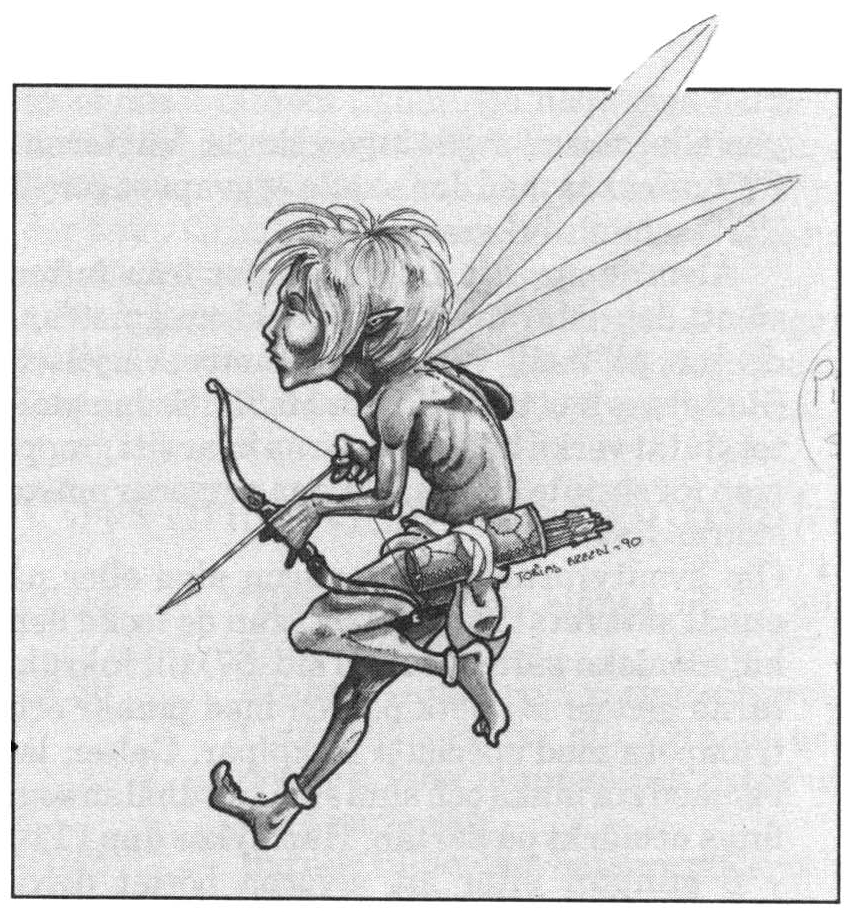

10. Det gröna ögat
Mitt gröna öga lyser bland löven där blommornas barn till blodet biter i skogens högsta träd, men lägre ändå än lägsta järnek därjämte

Personer: Kentauren Kestur, Gaddagormgald, Grimhild, Melealina, Pipo, Piso, Sipo, Siso Varelser: Enhörningen Kornalbon, Jättekorparna Alame och Elux
Alven och stjärntyderskan Melealina bor i en dal mitt inne i Tocmerskogen. Hon fick sitt namn av ”Meleas” — mörk, och ”alen” — gryning, eftersom hon föddes en morgon under solförmörkelse, vilket gav henne den speciella gåvan att se det som är fördolt för andra. Under solförmörkelse anses världen för en kort sekund stå stilla. Den tid som då ändå förflyter är till läns och gemensam för alla världar. Den som föds i den lånade tiden tillhör inte bara vår värld utan är en förmedlande länk till övriga världar och går ofta ett sällsamt öde till mötes.
Melealina har tillfälligt dragit sig tillbaka och umgås bara med de små älvor som också lever i dalen. Till skillnad från de andra astrologerna vet hon allt om rollpersonerna, deras uppdrag och vad som förväntas av henne. Se avsnittet om alvkvinnan i persongalleriet.
Melealina bor i en jättelik blomsterek som verkligen är Tocmerskogens högsta. Eken står emellertid i den djupa dalen bortom berget Tocme och når därför inte högre än järnekarna på berget runt dalen.
Tocmerskogen
Rollpersonerna får med Vox Ranzinas hjälp lista ut eller gissa att Melealinas träd bör finnas i Tocmerskogen, någonstans runt berget Tocme.
Färd i skogen
Marschfarten är 9 + 1T6 km per åtta timmars färd. Den låga farten beror på att Tocmerskogen är fylld av mispelsnår med blodsugande, rörliga frön. Efter en dags marsch måste varje vandrare klara ett PSY-slag eller förlora ett KP genom blodförlust och sår. Man undviker emellertid dagens KP-förlust om man klarar ett slag på Överlevnad skog. Man kan också helt undvika mispelfrön genom att smeta in sig med fett eller olja. (Om äventyrarna blir bekanta med någon jägare i byarna runt skogen kan de få detta tips.) Observera i så fall brandrisken om den inoljade anfalls med eld.
Händelsen i skogen
Det finns 1/3 chans till händelse två gånger per dygn. Slå 1T12 för klockslag.
1T100 Händelse
1-25 Färden avbryts för dagen/alla tappar två timmars sömn, kanske för att någon fått ett mispelfrö i örat.
26-31 man upptäcks av 1 -2 jagande musteloner (Trakorien sid. 82).
32-37 man stöter på en flock vildsvin (MB II sid. 22)
38-52 man stöter på ett bytesdjur motsvarande 1T6 dagars mat
53-56 man stöter ihop med en ilsken svärm vildbin (MB II sid. 17)
57-59 man stöter ihop med en hjortid (MB 11 sid. 73. Kanske har man just ätit upp hans älskade till lunch)
60-68 man hör hur en dock på 5 + 1T8 vargar/ulvar närmar sig (MB I sid. 15-16)
69-74 Man kommer till en sjö med dricksvatten. En flod rinner från Tocmerberget ner till sjön och vidare ut i havet. Det finns 30% chans att man ser en vacker humanoid sitta på en sten vid stranden och sjunga vackert. Sångaren dyker under ytan så snart han får syn på främlingarna. Han kommer från sjöfolket, ett tillbakadraget alvfolk som bor i en stad under vattnet. Det enda sättet att komma i kontakt med Sjöfolket är genom musik. Musicerar någon vid sjön finns 10% chans vid FV 4 och 25% chans vid FV 5 att 1T10 sjöalver kommer till ytan för att lyssna. De är mycket intresserade av instrument, för själva sjunger de bara. Bland sjöfolket finns skickliga animister som kan hjälpa sällskapet med helning, etc., om man ber dem vackert och ger en lämplig gengåva. Sjöfolket förmår till och med kalla tillbaka en nyligen död till livet, men sådana konster praktiserar de bara i undantagsfall, kanske för att rädda en oersättlig sångare, eftersom de anser döden vara helig. Melealina känner sjöfolket och samtalar med dem då hon passerar sjön. Alla sjöfolksvarelser har förmågan att förvandla sig till en fisk för att snabbt förflytta sig genom vattnet. De ger sig aldrig ut i saltvatten.
75-81 Sällskapet träffar kentaruen Kestur och de förtrollade klavykerna. Man kommer ut i en glänta där fyra manshöga enbuskar står på linje. Den sista busken har tappat barren och tycks vara död. Om man kikar innanför barren är buskarnas stammar formade som människor med rustningar.
SL: Buskarna är en trupp klavykiska infanterister från första ransardiska krigen under befäl av stöveljunkare Gaddagormgald (den främsta busken). Soldaterna förtrollades till enbuskar år 191 eO, dvs. för mer än fyrahundra år sedan, när de överraskade en ransardisk druid som samlade örter i skogen. Man kan väcka Gaddagormgald med besvärjelsen SKINGRA om man övervinner förhäxningens E3. De andra soldaterna har dessvärre drabbats av stamröta och faller döda ner om förtrollningen bryts. I skogen vid gläntan lurar kentauren Kestur som nu stiger fram och undrar vilka besökarna är.
Tipz: Om någon rollperson nyligen avlidit kan man låta ytterligare en buske vakna till liv som spelarens nya figur. En person som sovit de senaste fyrahundra åren har ju inget speciellt ställe att ta vägen och kan knappast vara Shaguls spion.
82-88 Sällskapets nattläger invaderas av rovängrar, en skalbaggsart som vandrar eller flyger i flockar om många tusen och äter det mesta i sin väg. Ängrarna slukar sällskapets mat och allt de kommer åt av läder, trä, tyg, pergament, päls etc. De rör inte levande varelser men gärna deras kläder, hår och skägg. Om vakt är utsatt får denne var femte minut slå för Upptäcka fara för att se om han märker skalbaggarna. Räkna med att insekterna var femte minut äter upp 10% av mat och ätlig utrustning. Om ingen vakt finns slås ett svårt Upptäcka fara för en slumpvald person i sällskapet var tionde minut.
89-100 Plötsligt väderomslag. Slå på vädertabellen.
Karta över Tocmerskogen
a Normal skog
Den yttre delen av Tocmerskogen där bybor och örtsamlare ofta vandrar.
b Inre Tocmerskogen
Den svårforcerade del av Tocmerskogen dit människor sällan går. Se separat beskrivning ovan.
c Myskälven
Vid byn Pjullo rinner Myskälven ut ur Tocmerskogen och ner i sjön Limmarsfjäset. Älven har fått sitt namn av att den på försommaren fylls av blomblad från skogens körsbärs- och äppleträd.
Geografi => floder börjar inte sällan som bergsbäckar. (Ett perfekt slag => vattnet har svag smak av klipptryffel som enbart finns i berg)
d Det svarta urberget
Se separat beskrivning. Urberget kommer i dagen på sluttningarna norr och väster om berget Tocme.
e Berget Tocme
Högre upp på Tocmerberget växer huvudsakligen järnek, en liten stickande buske. De enstaka träd man ser är förkrympta björkar och barrträd. Bergets sidor är inte särskilt branta utom på enstaka ställen. Ibland vandrar man över hedar och myrar.
f Melealinas dal
Se separat beskrivning.
g Sumpskog
Vid färd i skogen på bergets östsida får äventyrarna alla nackdelar från såväl Tocmerskogen som från Miasma (se Trakorienmodulen). SL kan med fördel kasta in något lämpligt träskodjur också om han är på dåligt humör.
Det svarta urberget i sagan
Från skapelsemyten Enuma elish. (Kan delas ut till lärda rollpersoner och sångare.)
I begynnelsen klöv Marduk urvarelsen Tiamat med nordanvindens mäktiga svärd. Av hennes kropp skapade gudarna världen.
Tiamats blod flödade ur stridens sår och samlades till ett rött hav, men mitt i detta hav låg hennes fallna kropp som en kontinent av svart urberg.
Demonerna som dyrkat Tiamat grät bittert över sin moders död ty deras makt var för all framtid bruten, och deras tårar föll över världen som ett hållande regn och sköljde ner blodet i sprickor och hålrum. Än i denna dag flyter Tiamats blod genom underjordens ådernät och skänker bergen kraft att trotsigt skjuta sina tänder mot skyn.
Men under urtiden låg det svarta berget ännu ensamt, och det var mycket stolt, ty det var äldre än allt annat. Vid gudarnas rådslag bestämdes att levande varelser skulle vandra över den svarta kontinenten för att i evighet prisa segern över Tiamat.
Det svarta urberget kunde inte tåla sina innevånare, utan öppnade klyftor där de föll ner och vältrade sina block mot dem. När gudarna såg detta, lät de vulkaner spy lava över svartberget och täckte lavan med jord, och de skapade växter vars rötter band jorden så att det svarta berget för alltid skulle ligga fjättrat och dolt.
Men sägnen berättar att det svarta berget blev allt mörkare i djupen och att det kommer i dagen på undanskymda platser för att söka hämnd på skapelsens liv...
Det svarta urberget i verkligheten
I norra Tocmerbergen kommer svart, elakt urberg i dagen. Urberget minns och saknar tiden då det fortfarande var ensamt i världen, och söker bergta varje levande varelse som kommer för nära. På berget huserar resterna av bergets tidigare offer i form av lyktgubbar. Enligt gamla sägner ska den otillgängliga Tocmerskogen för mycket länge sedan ha planterats runt berget för att isolera det.
Om rollpersonerna förirrar sig in i det markerade området norr om Tocmerbergen, t.ex. genom att välja fel gren av Myskälven om de kommer från sjön Limmarsfjäset, så börjar det gamla urberget hemsöka dem.
Beskrivning av landskapet runt det svarta urberget
Skogen blir allt tystare och inga djur syns längre. Man kan istället höra utdragna tjut och dova, råmande ljud. Dessa ljud uppstår då vinden blåser över bergets grottöppningar och klippformationer. Ibland stöter man på grottor och förvridna stöder med håligheter där ljuden alstras. Stora klippblock, uråldriga ekar och stora ormbunkar börjar uppträda. Här och var står meterhöga, svagt ovala megaliter (ensamma stenstoder). Stenen är mörkt svartgrön. Generellt gäller att färd djupare in i området sker med normal hastighet medan färdhastigheten ut ur området är halverad eftersom berget lägger hinder i vägen.
Slå 1T10 under vandring då så synes lämpligt, eller välj händelse nedan efter behag. Händelser som förvirrar färdriktningen kan undvikas genom ett lyckat slag i Orientering.
T10 Resultat
1 Man stöter på en säregen klippformation som vagt påminner om en människa. Slår man 1 igen stöter man återigen på samma klippa fast på annat ställe. Kanske den står på stigen bakom sällskapet där man nyss passerade utan att märka den.
2 Någon glider ner i en ravin som låg dold under multna växter. Fallet undviks om man klarar ett SMI-slag. Ravinen kan vara 1-15 m djup. Skador blir som vid fritt fall minskade till 65% p.g.a. friktion mot väggarna. Rustning skyddar.
3 En större sten kommer studsande nerför en sluttning mot sällskapet. Den ser ut att missa, men ändrar riktning mot en klippa så att en slumpmässigt utvald person, djur eller större föremål i gruppen måste klara ett SMI-kast eller träffas, vilket ger 2T8 skador. (Större föremål är vanligen mycket osmidiga och får heller inget räddningskast alls.)
4 Man stöter oväntat på oframkomlig blockterräng. Då man vänder stöter man på liknande, än mer oförklarliga block där man med lätthet passerat några minuter tidigare. Sällskapet tvingas ta en annan väg.
5 Man återkommer till en plats man nyss varit på trots att stigen inte grenat sig.
6 Någon känner sig iakttagen och tycker sig se ögon i klippan. Då man tittar efter finns där ingenting.
7 Man stöter på en bäck uppifrån berget. Vattnet smakar gott, men är ohälsosamt. Den som dricker mer än någon deciliter får svåra magsmärtor efter 20 + 1T20 minuter och kan inte flytta sig eller strida under 1T20 timmar (halvera tiden om personen klarar ett FYS—slag).
8 Oväntad snöstorm/åskväder under 1T20 timmar.
9 Man står inför en mörk meterhög grottöppning. Ett svagt vinddrag strömmar fram. Lyssna => svaga kvinnoskratt hörs mycket långt därinne. (Dessa är bara villor frammanade av berget. Går man in finns 20% risk per minut att grottan rasar. Slå 1T1O. 1-6 => mindre ras ger 1T8 skador på alla. 7-9 => större ras. Alla som inte klarar SMI-kast kläms fast och får 1T10 skador. Man kan ta sig lös själv med svårt STY-kast per timme. 10 => Dödligt ras om man inte klarar svårt SMI-slag.
10 Plötsligt sprutar het ånga ur ett hål vid stigen. En slumpmässigt vald rollperson måste klara ett SMI-kast eller få 1T6 skador.
11-12 Man kommer ut på en mindre myr i det svarta landskapet. Myren känns vänlig i förhållande till omgivningen eftersom bergets ondska inte kan tränga genom myrmarken. Detta är en våt, men säker lägerplats.
Dröjer man kvar för länge i området vaknar den gamla ondskan till liv på allvar. Slå 1T8 var åttonde timme om sällskapet slår läger eller fortsätter sin färd genom området efter ett dygn. Landskapet ändrar sig nu hela tiden så att man måste klara ett Orientering/Överlevnad berg/Upptäcka fara (svår) för hitta rätt väg ut. Annars slår SL slumpmässigt för färdriktning var åttonde timme.
1-2 Slå på tabellen ovan
3 Ett muller och brak kommer hastigt närmare och på bara några meters håll ser man hur ett gigantiskt klippblock (mer än 10 meter diameter) kommer rullande mot lägret, mejande ner träden i sin väg. Rollpersonerna kastar sig lämpligen ur vägen, vilket går bra om de klarar ett lätt SMI-kast. För varje föremål de söker rädda med sig får de -2 på tärningen. Det som blir kvar i lägret krossas under stenen.
4 Någon vaknar och sitter fast. Personen har sjunkit in i en klipphäll under honom och stenen har slutit sig om hans ben. 1T4 föremål sitter fast eller är försvunna ner i berget.
5 Som ovan, men 1T4 föremål (eller en SLP för maximal effekt) är spårlöst försvunna ner i klipphällen. Eventuellt ser man någon liten del sticka upp.
6 Plötsligt kommer ett massivt ras störtande utför en sluttning. Alla (även djur och större/ bräckliga föremål) måste klara ett SMI/hållfasthets-slag eller drabbas av 2T8 skador.
7 Lyktgubbar dyker upp nära gryningen. I första hand söker de locka äventyrarna ner i någon av bergets dolda klyftor eller in i rasgrottor, kanske genom att imitera rösten hos någon som försvunnit.
8 Jordbävning skakar marken. All organiserad förflyttning omöjliggörs för 1T6 timmar. En klyfta öppnar sig plötsligt och de som inte klarar ett vanligt SMI-slag faller ner 1T8 meter. Klyftan sluter sig igen med ett förödande brak efter 5 + 1T8 SR.
Melealinas dal
Från Tocmerbergets topp har man en fantastisk utsikt i klart väder. Orientering => man anar en dal med hög skog åt sydost, en halvmil från toppen. På berget runt Melealinas dal vadar man genom buskage med järnek (så att spelarna förstår att de kommit rätt enligt profetian).
a Klippskrevan
Äventyrarna anländer till dalen vid denna punkt. Här kan man tämligen bekvämt klättra ner i dalen. På alla andra ställen måste man använda färdigheten klättra eller rep.
Överblick: Överallt på bergskanterna runt dalen får man vada genom stickande snår av järnek. Klippkanterna är 30-60 meter djupa och ganska brant stupande. Hela dalen sluttar ut mot stupet mot träsken i Miasma.
I dalens norra del ser man rök från eld och en stenmur omgiven av resliga barrträd. Rakt nedanför skrevan finns otillgänglig blockterräng. Mitt i dalen samlas flera floder och bäckar i en sjö runt vilken en lummig lövskog växer med väl så resliga träd.
SL: Allt i dalen är så stort att äventyrarna från klippan inte kan bedöma storleken på exempelvis Grimhilds trädgård utan att klara ett svårt INT-kast.
b Klippblocken
Nedanför klippskrevan finns ett område på 200 x 200 meter med stora klippblock. Området tar någon halvtimme att forcera.
Detaljer: Delvis dolt under blocken nedanför skrevan ligger skelettet av en ung jättevarelse med bröstkorgen krossad. Detta är resterna av Grimhilds son, som avled när han försökte klättra uppför klippan och drog ner ett stenras över slg.
c Bro
Bron är byggd av ovanligt kraftiga plankor över en c:a åtta meter bred flod.
d Grimhilds trädgård
Se separat beskrivning.
e Älvornas skog
Det finns inga broar över floderna i skogen eftersom älvorna flyger och bär med sig Melealina och hennes enhörning de få gånger de vill någonstans. Älvorna beskrivs separat.
f Kalydonernas håla
I en jordhåla bor två kalydoner med fyra kultingar. Varje kvart äventyrarna befinner sig i skogen söder om den sydligaste flodgrenen finns 40% risk att de blir överfallna av galten eller av både galten och suggan.
g Melealinas ö
Mitt i den delade strömmen, strax innan vattenfallet, ligger Melealinas 6. Se separat beskrivning.
Älvorna
Melealina lever med en stam älvor (MB I sid. 55) i en undanskymd dal på Tocmerbergets östra sluttning. Det finns c:a 250 älvor varav tre är animister med FV 10 i Animism och 810 i besvärjelserna RENA, SPÅRLÖS och VIRVELSKÖLD (om Gigantregler används). Älvornas anförare, den stolte kung Orangulot, har av oraklet fått i uppdrag att hejda alla främlingar och föra en talesman till henne om gästerna har ärligt uppsåt. Älvorna har förstått andemeningen i dessa order, men har dels svårt att skilja storfolk från varandra, dels dåligt minne och dessutom svårt att ta några som helst order på allvar. När Peatro Petralbas ande besökte Melealina innan den vandrade till dödsriket, beskrev den äventyrargruppen och oraklet har förberett älvorna. Om gruppens sammansättning ändrats det allra minsta tror älvorna dock att det är fel personer. Alla inkräktare upptäcks omedelbart så snart de kommer in i skogen, såvida de inte använder magi eller klarar ett svårt slag i Kamouflage. De osynliga älvorna kan använda följande strategier för att hejda främlingarna.
- Älvorna försöker stjäla vapen och all annan lös utrustning så att inkräktarna blir försvarslösa. Eftersom älvor kan läsa äventyrarnas tankar, bli osynliga när de så önskar och normalt har FV 17 i Stjäla föremål har de stor chans att lyckas gång på gång. De kommer också flitigt att använda sin besvärjelse AVBILD för att söka distrahera sällskapet. Räkna med att älvorna dag som natt gör 1T4 stöldförsök per timme. Varje älva kan flyga bort med lika många BEP som sin STO. För att stjäla större föremål måste de vara flera, och då måste varje deltagare lyckas med Stjäla föremål.
Om äventyrarna senare blir bekanta med Melealina får de på begäran tillbaka allt stulet, men för varje föremål finns 20% risk att älvorna slängt det eller glömt var de lagt det.
-
Älvorna försöker söva inkräktarna med sina sömnpilar för att binda dem och föra dem till oraklet. Räkna med att tjugo älvor med fem sömnpilar var deltar i attacken. De vågar sig bara fram om alla i sällskapet har somnat. Tar pilarna slut innan dess, eller om någon älva skadas, avbryts attacken.
-
Alvanimisterna försöker snärja främlingarna med hjälp av sitt kristallstoft. Varje animist har tre påsar stoft. Det strös över växter vilka då börjar röra sig enligt besvärjarens vilja. Antingen strös pulvret över ett enda träd, eller över ett större område med buskar, gräs eller örter. För varje påse stoft får påverkade växter sammanlagt 1T20 + 10 STY-poäng. De kommer att snärja in närmaste person om denne misslyckas med ett svårt SMI-slag. Slå nu ett STY mot STY slag varje SR. Om växterna övervinner fångens STY tre gånger, sitter denne fast utan att kunna röra sig, men om personen istället lyckats göra motstånd tre gånger kan han springa ut ur det förhäxade området. Fummel respektive perfekt slag avgör striden direkt. Man kan gå lös på växterna med eggvapen och magi, men krossande vapen eller missiler gör ingen skada. Växternas STY minskas med den skada eggvapnet gör -2 ”KP” som absorberas.
Älvorna sprider kristallstoftet från luften så att det dalar ner på marken som gnistrande snö på 2 SR (tid för en motbesvärjelse). Stoftet verkar under 1T20+10 SR. Sedan stoftet slutat verka håller växterna kvar sitt grepp, men rör sig inte längre. Fångna personer måste skäras loss.
-
Om äventyrarna skadat någon älva eller på annat sätt retat skogsfolket, kan de locka den kalydoniska galten (MB II sid. 57) till inkräktarna genom att peta på den med pinnar och trumpeta med speciella lockpipor. Galten lever med sin maka och sina små i jordhålan som finns utmärkt på kartan. Han dyker upp 1T10 + 5 minuter efter att älvorna börjat driva honom.
-
I sista hand går älvorna till attack för att skada och döda med sina pilbågar. Detta sker endast om inkräktarna först dödat en älva eller på annat sätt visat vidrigt beteende. Räkna med att 1T20 + 25 osynliga älvor med tio pilar var deltar i attacken. Om mer än fem älvor dödas i striden drar sig de andra tillbaka och undviker i fortsättningen främlingarna.

Grimhilds trädgård
I dalens norra del har det urgamla bergstrollet Grimhild. Hon är en tragisk, men alls inte ond varelse även om hon tror på en sträng uppfostran. För ett par hundra år sedan dog hennes enda son i ett ras när han klättrade på klipporna i dalens västra ände. (Det är hans skelett som ligger där.) Grimhild hittade aldrig sonens kropp och vägrar därför tro att han är död. Med åren har hennes sinne förmörkats så att hon adopterar alla humanoida varelser som kommer i närheten som sina barn. Problemet är att hon överbeskyddar sina telningar så hårt att de sällan överlever särskilt länge. Detta gör henne ännu mer ledsen och förvirrad.
Tipz: Grimhild litar främst till sitt luktsinne. En varelse som luktar fel kan inte vara hennes son. I min egen kampanj deltog en tjuv som av vidskepelse brukade äta stam mängder vitlök. Grimhild fångade honom och frågade hans kamrater om han var ett äta-djur eller ett pussa-djur. Sedan de andra försäkrat att han var ett husdjur kunde han röra sig ganska fritt medan de andra tvingades delta i Grimhilds lekar och hushållning.
a Stenmur
Muren som omger trädgården är sex meter hög, av grovhuggen, lättklättrad sten.
b Träport
Dubbelporten av trä är fyra meter hög och stängs nattetid med en tvärslå på insidan. Tvärslån sitter tre meter upp och kan bara rubbas med STY 40 eller mer. Puttar man ner den nattetid för att fly, finns 30% risk att trollet hör när den ramlar ner och kommer ut.
c Vattentunna
Den tre meter höga vattentunnan fylls på varje dag av Grimhild med vatten från floden.
d matplats
Matplatsen är öppen men överbyggd mot regn. Under taket står ett jättelikt stockbord och bänkar. Man äter direkt på bordet som har skålformade fördjupningar vid varje plats. Alla förväntas diska efter sig, dvs slicka rent bordet på sin plats.
e Bod
I boden förvarar Grimhild sin gryta, sina trädgårdsredskap och annat smått och gott. Bortsett från grytan finns där inga metallföremål.
f Torkställning
Bredvid boden står en träställning där Grimhild hänger upp fisk och vilt för att det ska surna eller torka (beroende på vädret) så att det blir mört och rart. Stanken vid träställningen är bedövande.
g Odlingar
Grimhild odlar blommor vid porten och för bergstroll ätliga växter vid matplatsen.
h Svamplunden
Lövträden i den lilla lunden är belamrade med träiga svampar som bergstrollet planterar genom att bita i barken med sina huggtänder så att sporer från hennes munsvamp får fäste. Svampen bryts och äts som bröd. Människor förmår inte bita sönder svampen.
i Begravningsplatsen
I ett avskilt hörn av trädgården begraver Grimhild de barn hon av råkat ha ihjäl. Hon går varje dag till platsen en stund för att yla och lägga blommor på gravarna.
j Barnkammaren
I denna grotta stängs ”barnen” in varje kväll. En stor sten rullas för öppningen. Stenen kräver totalt STY>55 för att kunna rubbas. Knuffas den nattetid bort inifrån finns det 50% risk att den välter och väcker Grimhild. Stenen lämnar så stora glipor att en person med STO < 8 kan pressa sig förbi.
k Korparnas hus
I ett fågelhus åtta meter upp på klippväggen bor jättekorparna Alame och Elux. Nedanför huset ligger drivor av guano.
l Grimhilds grotta
Grimhild sover på en lumphög längst ini grottan. Närmare utgången står en stor träpotta. Allra längst in finns en grovtimrad trävägg som kan lyftas bort (STY 45). Bortom träväggen fortsätter grottan upp ur dalen. Grimhild tar denna väg när hon ska upp och jaga i Tocmerskogen.
Utgången till grottan blockeras av en bräddörr som kan lyftas bort med STY 40. Det är förbjudet för "barnen” att gå in i Grimhilds grotta. Om någon ändå smyger sig in känner hon vem som varit där på lukten när hon kommer tillbaka.
m Eldstad med bänkar
n Skamvrån
Grimhilds skamvrå är ett hål i marken vilket täcks av ett trägaller (STY 30 för att rubba). Hålet är fyra meter djupt. Det står oftast ett par decimeter vatten på bottnen.
Äventyrarna möter Grimhild
Om trollet får syn på rollpersonerna ger hon till ett glädjetjut och rusar fram mot dem för att bära hem dem i sin säck. Varje normal varelse som inte kan stenfolkens språk uppfattar detta som en attack.
Grimhilds beskydd
Trollet räknar sina skyddslingar morgon, kväll och vid varje måltid. Om någon är försvunnen, låser hon omedelbart in de andra och ger sig av på jakt. Hon har ett osvikligt luktsinne motsvarande Spåra 19. CL-slaget modifieras för spårets ålder, men inte för underlaget. Det finns en ackumulerad chans på 10% för var tredje kilometer flyktingarna hunnit att trollet tröttnar och vänder hem. Grimhilds två tama jättekorpar Alame och Elux hjälper till i spaningarna.
När hon hunnit ikapp flyktingarna fångar trollet dem med nät eller med händerna och stoppar dem i sin stora säck för transport hem.
En vanlig dag hos Grimhild
06.00 "Barnen" väcks, släpps ut ur sin grotta och räknas.
06.30 Frukost — vanligen vatten och gröt. Grimhild serverar allt flytande genom att fylla munnen och pytsa ut lite i varje skål.
07.15 Barnen tilldelas arbetsuppgifter och verktyg, jättelika sopkvastar etc.
07.30-09.00 Grimhild pysslar på kyrkogården och i sin trädgård. Ibland sitter hon och ylar och gråter över sina avlidna telningar.
09.00-11.30 Grimhild går ut i skogen för att skaffa mat. Porten lämnas öppen.
11.30-12.30 Lunchen tillagas på gårdsplanen.
12.30-13.15 Lunchen äts gemensamt. Ibland serveras kött, men för det mesta träig svamp som människor inte ens förmår tugga.
13.15-14.15 Trollet leker med sina barn. Trollekar kan innebära att kasta stora stenar till varandra, att slåss med något vilddjur som Grimhild släpat hem i säcken eller att hämta upp silverstycken med händerna ur en kokande gryta.
14.15-17.30 Grimhild går ut i skogen.
17.30-18.30 Gemensam middag.
18.30-20.30 Samkväm med sång och lekar runt elden.
20.30-21.00 Trollet på kyrkogården
21.00 Trollet stänger in sina barn för natten sedan hon sjungit vaggvisor för dem en stund (Hoaiaiaiai buff?)
22.00 Trollet lägger sig.
Grimhilds bestraffningar
Grimhild tror på en sträng uppfostran i gammal bergstrollslig anda och tar gärna till såväl nävar som påk. När rollpersonerna kommer till trädgården gör SL upp en tabell över hur personerna ligger till. Alla börjar med värdet 35%. Vid förseelser eller gott uppförande lägger SL till eller drar ifrån poäng enligt riktlinjerna nedan. Varje handgriplig bestraffning med nävarna eller påken räknas som en automatiskt lyckad attack med detta vapen. Skadan som slås fram gäller för RP med 100% uppförandevärde, men minskas ner proportionellt till offrets nuvarande %-siffra. På så sätt slår trollet hårdare ju mer missnöjd hon är med någon. Exempel: Om skadan 2T4 + 4T6 blir 1+3+5+2+4+6 = 21, och rollpersonens %-siffra är 55% blir skadan 55% av 21 = 12.
Skulle någon avlida till följd av bestraffning, blir trollet förtvivlat, begraver personen på begravningsplatsen och sitter och ylar resten av dagen utan att bry sig om de andra.
Om personen har < 50% blir bestraffningen en smocka. Om personen har > 50% tar trollet till påken. Om personen har > 75% blir han dessutom doppad i vattentunnan 1T4 minuter och inspärrad 1 skamvrån i 1T4 dagar.
Poäng
Händelse modifiering
Äter inte maten -10
Protesterar mot maten -15
Uppträder mopsigt -15
Anfaller Grimhild -25
Vill inte vara med och leka -5
Lyder inte (vägrar t.ex. att arbeta) -15
Försöker öppet lämna trädgården -10
Försöker fly och fångas -25
Dag utan negativ modifikation +10
Hur klarar sig äventyrarna ifrån Grimhild
Rollpersonerna kan lyckas med sin flykt, men om de återvänder finns risken att trollet känner lukten av dem igen. Hon har ett mycket gott luktminne.
Bäst är att visa trollet skelettet av hennes son. Får hon syn på detta vinkar hon bort äventyrarna, bär hem liket för att begrava det och lever därefter i sorg och stillhet.
Rollpersonerna bör knappast kunna döda trollet. Låt dem prova lite psykologi som omväxling!
Melealinas ö
Mitt i dalens flod, strax innan vattenfallet, ligger Melealinas ö. Ön är 250 meter lång i Bodens längsriktning och 150 meter bred. Den är helt gräsklädd med sandstränder. På sydsidan är floden trettio meter bred och på nordsidan femtio meter. Strömmen är så stark att man inte kan simma eller ro över utan att dras med utför fallet. Mitt i strömmen på båda sidor om ön ligger en flotte med låg reling. De två flottarna ligger stilla trots att vattnet virvlar runt dem. Man ser inte några förtöjningar. Dessa Hottar är de yttersta spetsarna av två levande rötter från den stora blomstereken, vilka Melealina format till farkoster med sina alvkonster. Flottarna kan dirigeras som färjor med animistbesvärjelsen KONTROLLERA VÄXTER.
Ön omges av sandstränder. Den är gräsklädd och glest bevuxen med blomsterekar. Närmast fallet står den gigantiska blomsterek med sfärisk krona som Melealina inrättat till sitt hem. Eken är Tocmerskogens högsta träd som det talas om i Vox Ranzina. På ön går enhörningen Kornalbon runt och betar, medan Melealina oftast är i sitt träd. 1T20 älvor brukar oplanerat flyga runt på ön.
Melealinas blomsterek
Alvkvinnan har levt flera hundra år i sitt stora träd och utformat det efter egen smak.
a Undre hissen
En av de stora, lägre grenarna har en plattform och fungerar som hiss med hjälp av besvärjelsen KONTROLLERA VÄXTER.
b Matplats
På en av de lägre grenarna, c:a 40 meter över marken, är en stor gren breddad till en plattform med bord och bänkar. Ovanför plattformen har en mängd grenar ympats in från andra trädsorter så att frukter och blommor av alla slag dignar inom lämpligt plockavstånd. Grenarna bildar ett vackert nätverk som skyddar mot regn.
c Lövsal
På andra sidan stammen, mitt emot matplatsen, har en stor (12 x 4 meter) lövad sal formats med ojämnheter där besökare kan sitta eller sova i lövbäddar. Den regnskyddade salen fungerar som gästrum och rådssal. Genom en öppning i lövverket mot öster har man en mycket imponerande utsikt över Miasmaträsken som erbjuder en vacker syn när solen går upp. Man kan promenera mellan matplatsen och lövsalen efter behag.
d Övre hissen
Från lövsalen kommer man vidare mot Astrariet, utkiken och Melealinas sovkammare med ytterligare en magidriven trähiss.
e Melealinas sovkammare
Något tjugotal meter ovanför gästsalen ligger Melealinas sovkammare, en enkel lövhydda.
Detaljer: Bakom en lövridå hänger ett ensamt, knytnävsstort ekollon.
SL: Ekollonet är blomsterekens hjärta. Om det planteras växer ett liknande träd upp. Melealina tänker ta med sig ekollonet när det är dags att lämna Tocmerskogen.
f Astrariet
Ovanför Melealinas sovkammare är lövverket tätt. Vandrar man uppför en spiraltrappa som snirklar sig runt ekens huvudstam, kommer man upp i en gigantisk sfärisk lövgrotta som upptar huvuddelen av ekens krona. Man kan fortsätta uppför stammen till en platå där grenar strålar ut åt flera håll. På platån, i lövgrottans exakta mitt, finns en ensam sittplats där man ser åt alla håll. Grönt ljus strilar in genom det täta lövverket och självlysande blommor glimmar på ljusgrottans väggar. Det är tyst förutom surret av fridsamma insekter. Åskådaren förstummas av skönheten och tycker sig vara förflyttad ut bland stjärnorna.
SL: Lövgrottan är en exakt modell av stjärnhimlen, där varje lysande blomma motsvarar en stjärna. Melealina brukar sitta här inne och studera deras positioner. Om hon får förtroende för någon rollperson kan hon ta med denne upp till astrariet.
g Utkiken
En enkel stege fortsätter uppåt och slutar i en platå högst upp i trädet, utanför lövverket. Härifrån har man utsikt över hela dalen och ner över träsken i Miasma.